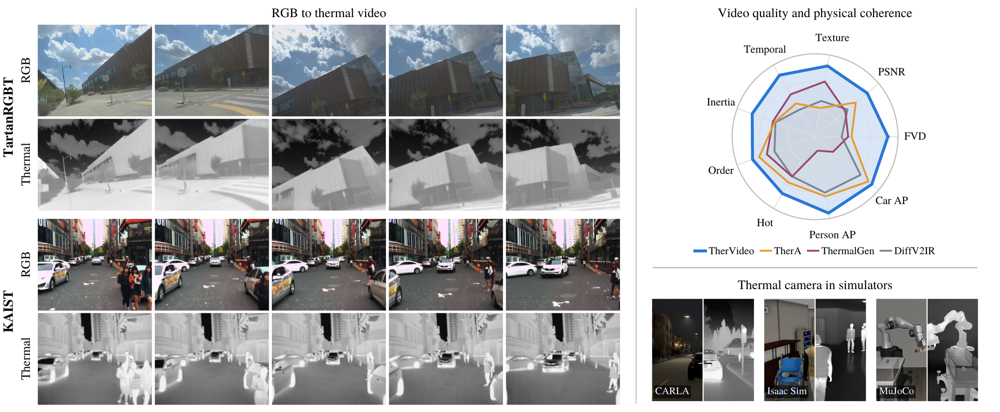

CVPR 2027 Submission · Anonymous Authors
TherVideo turns ordinary RGB video into temporally consistent thermal video, fast enough to act as a live thermal camera for real recordings and RGB simulators.

Image translators synthesize every frame on its own, so brightness jumps and textures shimmer from frame to frame. TherVideo generates the clip jointly and follows the real thermal camera over time. All clips are held-out test data.
TherVideo never saw a rendered image in training, yet it turns simulator renders into plausible thermal video: people run warm against cooler surroundings, and pedestrians stay visible at night and in fog. Short clips show key moments; the live clips are streamed chunk by chunk, as a real camera would deliver them.
A pedestrian steps in front of a car at night and stays visible as it is struck.
One arm passes the hammer to the other; arms and tool keep their contrast.
The pan on the stove is the hottest object in the kitchen.
Once lit, the logs become the brightest spot in the scene.
A person walking down the corridor stays warm against the walls.
People stand out against cooler floors and walls.
Workers and humanoid robots on a busy warehouse floor.
Robot arms keep their shape and contrast as they move.
Pedestrians on a dark, wet street are easy to spot.
Cars and people stand out where the RGB view is nearly black.
Pedestrians hidden by fog in RGB are clear in thermal.
Thermal imaging enables perception under limited illumination, but collecting diverse thermal data and constructing accurate physical simulators remain costly. Thermal synthesis addresses this data bottleneck by translating abundant RGB observations into thermal observations, yet existing frame-wise translation methods often introduce temporal flicker and physically unsupported appearance. To this effect, we present TherVideo, a framework that jointly models thermal appearance across time using a video foundation model. Progressive cross-modal adaptation unifies joint RGB–thermal generation and bidirectional translation to learn shared scene dynamics and modality-specific thermal appearance. Reinforcement learning via reward-weighted flow matching improves physical coherence by promoting desired thermal behavior and suppressing unsupported texture and illumination responses. Causal autoregression, few-step distribution matching distillation, and bounded-context rollout training enable low-latency streaming while maintaining long-horizon coherence. TherVideo reduces FVD by 37.2% and 54.2% on TartanRGBT and KAIST datasets, respectively, compared with the strongest adapted baseline on each dataset. For real-time sensor simulation, TherVideo achieves 17.6 FPS end-to-end at 640×512 on a single RTX 5090.